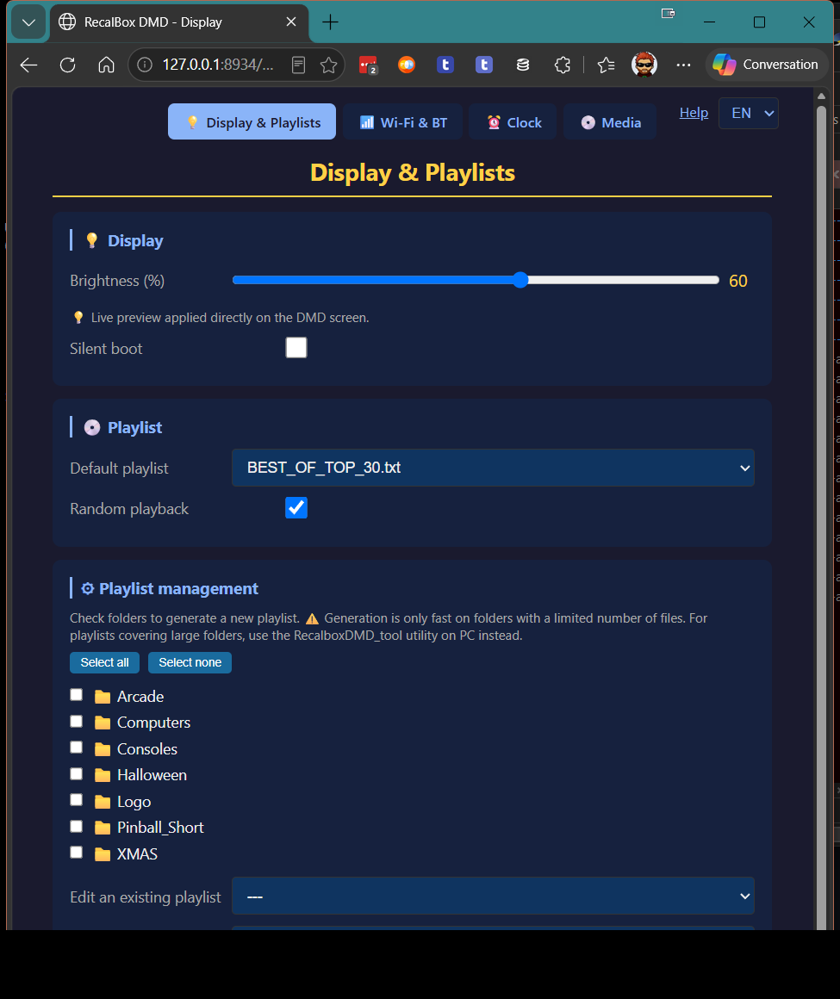
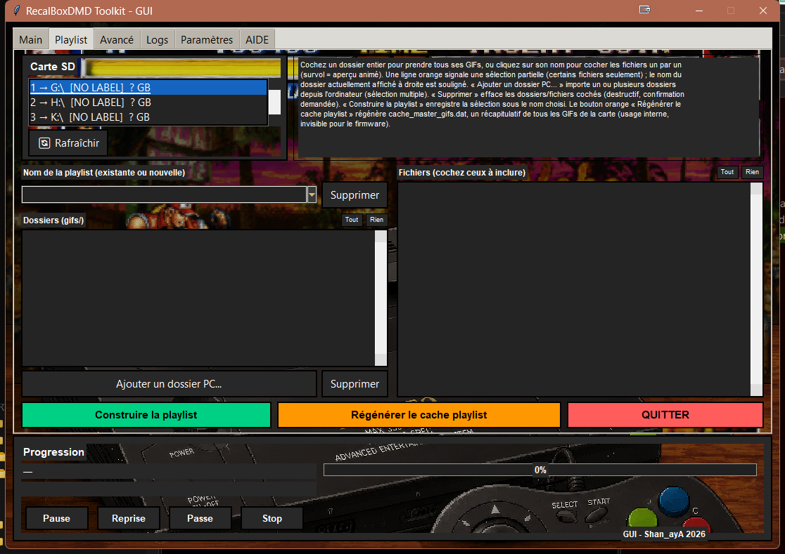
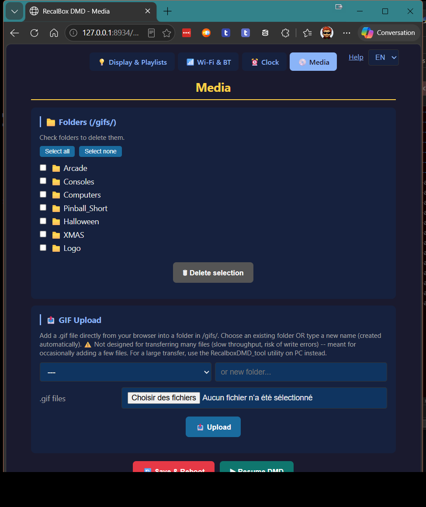
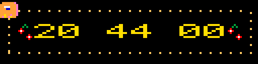
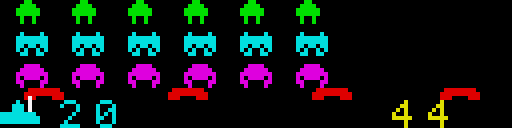
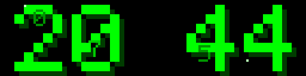
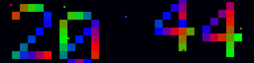
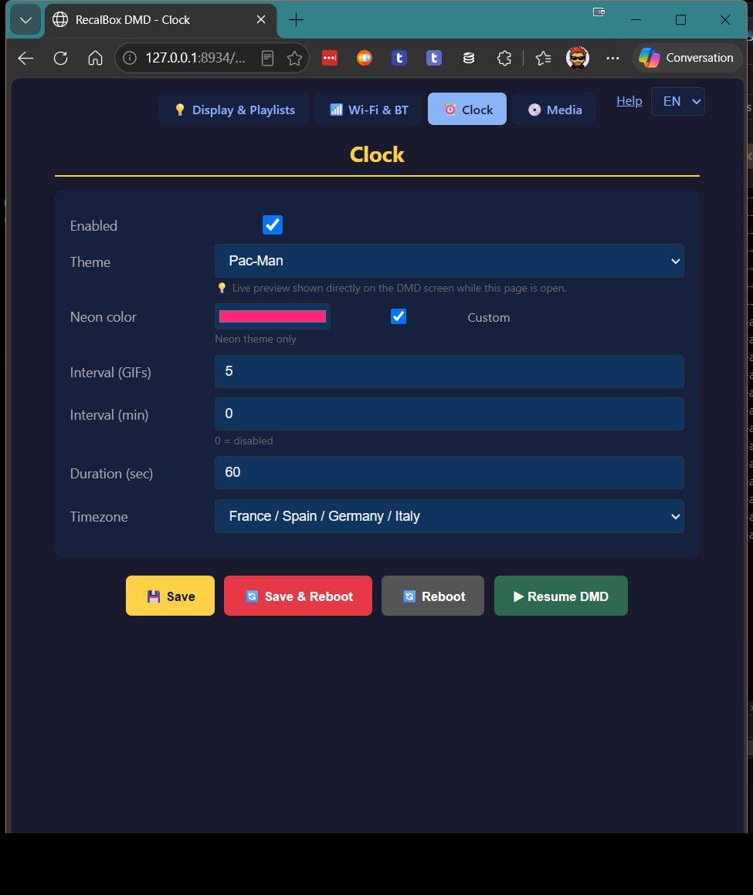
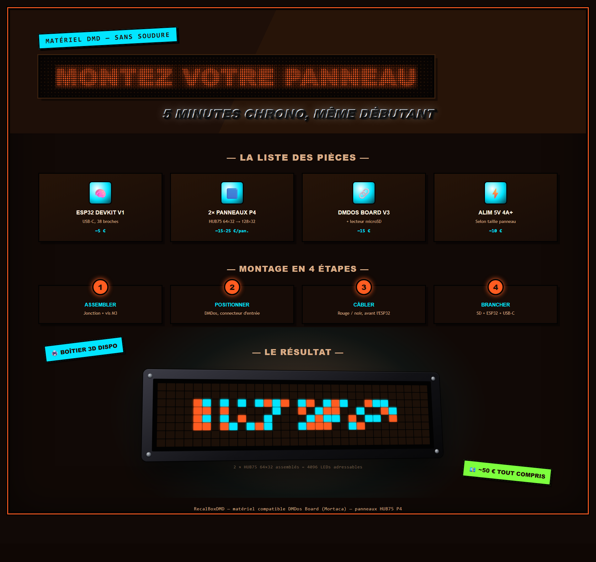

Un cadre lumineux autonome qui anime votre intérieur — des centaines de GIFs rétro en rotation, une horloge qui change d'habillage. Connectez-le en WiFi à n'importe quelle Recalbox et il devient aussi son marquee numérique.
Le pack fourni compte environ 600 GIFs pixel-art — arcade, consoles, ordinateurs, cinéma, anniversaires, Halloween, Noël... de quoi faire vivre le panneau sans jamais rien y brancher d'autre.
Pack offert par eLLuiGi / RpiTeam — leur collection complète (~11 000 GIFs) est en vente sur rpiteam.carrd.co.
Depuis votre téléphone, ou depuis une application PC dédiée pour les gros dossiers, choisissez quels GIFs tournent, dans quel ordre, et à quelle vitesse — votre propre programmation, sans rien recâbler.


Glissez une image depuis votre navigateur, téléphone ou ordinateur — elle rejoint la rotation immédiatement, sans reformater de carte, sans rallumer l'appareil.

Entre deux animations — ou en continu, si vous préférez — le panneau devient une horloge pixel-art. Dix scènes faites main, choisies en un instant depuis votre téléphone, avec un aperçu en direct poussé sur le panneau pendant que vous décidez.





Choix du thème, couleur, intervalle et durée — en direct depuis le téléphone
Aucune connexion n'est obligatoire pour la déco — mais connectez-le en WiFi à n'importe quelle Recalbox (PC, Raspberry Pi, Steam Deck, RGB Dual, RGB Dual 2, RGB Jamma...) et il affiche en direct le logo du jeu que vous lancez, son meilleur score, sa fiche, et le classement du défi communautaire du mois — automatiquement, sans rien reconfigurer.
Lancez une table Visual Pinball depuis votre Recalbox : le DMD affiche en direct l'écran de la table, comme un vrai afficheur de flipper — puis reprend tout seul son marquee habituel à la fin de la partie. Sans redémarrage, activable d'un simple interrupteur dans la page web du panneau. Les tables colorisées (Serum) s'affichent en couleur, les autres gardent le rendu monochrome classique.
Deux modules LED, une carte de connexion, un microcontrôleur — un tournevis suffit, environ 5 minutes de montage.
